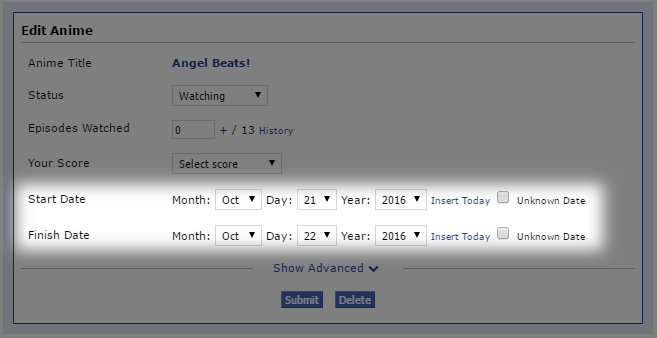

MyAnimeTimeline is a simple tool that lets you visualise your anime progress throughout the years.
Note: Only titles that have "Start Date" and "Finish Date" specified (see picture below) will be displayed. 